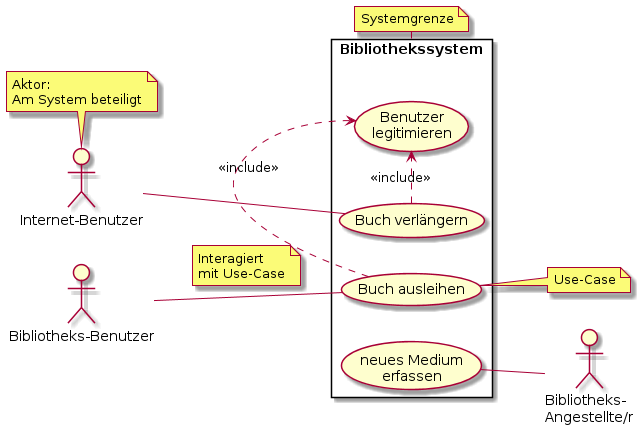

{% extends "./_base_template.html" %}
{% block title %}Lektion 3 - OOA - Use Cases{% endblock %}

{% block sections %}
<section data-markdown class="bigger-2">
<textarea data-template>
<i class="fas fa-graduation-cap"></i> Thema: OOA - Use-Cases
=============================

Heutiges Ziel
-------------

* Sie kennen die Ziele, welche das Analysemodell verfolgt
* Sie kennen die Vorgehensweise, wie man zum fertigen Analysemodell kommt
* Sie kennen Use Case-Diagramme und Use-Case-Beschreibungen und können diese anhand von Anforderungen erstellen

### Hausaufgaben

* Sie erstellen eine Use-Case-Beschreibung zum Use-Case
  "Medium via Webseite verlängern"

</textarea>
</section>

<section data-markdown data-separator-notes="^Note:" class="bigger-2">
<textarea data-template>
<i class="fas fa-flask"></i> Ziel des Analysemodells
===========

* Das Analysemodell hat zum Ziel, die genauen Anforderungen des Business formal abzubilden.

* Es wird **BEWUSST** auf technische Details / Definitionen verzichtet. Dies wird erst in der Designphase definiert.

* Das Erstellen des Analyse-Modells ist niemals ein starrer Prozess: **Jede Situation erfordert ein etwas anderes Vorgehen**.

* Wir lernen **„Best Practices“**, bewährte Vorgehensmodelle.

Note:
* In der letzten Lektion wurde der Unterschied Analyse- Designmodell behandelt. Hinweis darauf.
* Wir streifen die Analyse nur, Ziel des Moduls ist das Software-Design aufgrund des Modells.
</textarea>
</section>


<section data-markdown data-separator-notes="^Note:" class="bigger-2">
<textarea data-template>
<i class="fas fa-flask"></i> Analysemodells: Vorgehensweise
===========


<!-- .element: style="margin-left: 360px" --> Die beiden hier vorgestellten Vorgehensmodelle haben sich in der Praxis in vielen Projekten bewährt, sind aber keineswegs feste Regeln.
Wir sprechen vom **szenariobasierten Vorgehen** und vom **datenbasierten Vorgehen**:

<!-- .element: style="margin-left: 360px" --> Das **szenariobasiertes Vorgehen** ist empfehlenswert, wenn umfangreiche funktionale Anforderungen vorliegen und alte Datenbestände nicht existieren.

<!-- .element: style="margin-left: 360px" --> Das **datenbasiertes Vorgehen** ist empfehlenswert, wenn ein Datenmodell / alte Datenbestände existieren und der Umfang der funktionalen Anforderungen zunächst zu wenig bekannt ist.

Meine Empfehlung: immer erst mit **Use Cases** beginnen: Dies gibt Ihnen ein gutes Gefühl für den Umfang des Projektes.

Wir beschäftigen uns in diesem Modul mit Use-Cases und Klassen-Findung. Szenarien streifen wir etwas in der Analyse.

Note:
* In der letzten Lektion wurde der Unterschied Analyse- Designmodell behandelt. Hinweis darauf.
* Wir streifen die Analyse nur, Ziel des Moduls ist das Software-Design aufgrund des Modells.
* Frage: Die Erarbeitung von Use Cases direkt mit dem Kunden hat einen interessanten Nebeneffekt für die Projektplanung und Aufwandschätzung. Welcher?
* Antwort: Vielen Kunden wird erst beim erarbeiten von Use Cases bewusst, welche Ausmasse ein Projekt in etwa annehmen kann, und welche Prozesse vorhanden sind.
</textarea>
</section>


<section data-markdown data-separator-notes="^Note:" class="bigger-2">
<textarea data-template>
<i class="fas fa-flask"></i> Erarbeiten von Use-Cases
===========

* ein „Use Case“ zeigt einen bestimmten Anwendungsfall des Systems, eine Aktivität, welche ein Aktor mit dem System "ausführt".
* Das **Use-Case-Diagramm** dient als erste Diskussionsgrundlage und grenzt das / ein System ab: Es enthält mehrere **Use-Cases**.
* Die **Use-Case-Beschreibung** ist die genaue textuelle Formulierung des Use-Case(-Diagramms).



Note:
* An dieser Stelle praktische Vorführung in VisualParadigm:
 * Hinweis auf markierte Use-Case-Checkliste auf Moodle
 * wie wird ein Use-Case-Diagramm erstellt
 * Welche Komponenten sind verfügbar
 * Was ist ein include, was ein extend
</textarea>
</section>


<section data-markdown data-separator-notes="^Note:" class="bigger-2">
<textarea data-template>
<i class="fas fa-flask"></i> Erarbeiten von Use-Cases
===========

Praktische Übung
----------------

* Sie identifizieren die wichtigsten Use-Cases anhand der **Anforderung Bibliothekssystem**
* Ziel: **ein Use-Case-Diagramm** des Systems "Bibliotheksverwaltung"
  * Sie haben die möglichen Aktoren identifiziert
  * Sie haben die wichtigsten Use-Cases identifiziert
  * Sie haben ev. bereits inlcude- oder extend-Beziehungen gefunden
* Nehmen Sie die Checklist "Use Cases" zur Hilfe
  * Identifzieren Sie Ereignisse
  * Identifizieren Sie die Aktoren
* Arbeiten Sie in 2er- und 3er-Gruppen
* Zeit: ca. 15-20 Minuten
* Danach stellt Ihre Gruppe die Lösung am Beamer vor.

Note:
</textarea>
</section>


<section data-markdown data-separator-notes="^Note:" class="bigger-2">
<textarea data-template>
<i class="fas fa-flask"></i> Erarbeiten von Use-Cases-Beschreibungen
===========

* Jeder im Diagramm identifizierte Use-Case wird in einer **Use Case-Beschreibung** ausformuliert.
* Die Use-Case-Beschreibung ist die detaillierte, wörtliche Erklärung zum Use-Case und ist für die
  weitere Analyse sehr wichtig.
* Sie ist Diskussionsgrundlage zwischen Kunde und Entwickler, um komplexe Prozesse zu analysieren.

Wir schauen uns eine Use-Case-Beschreibung am Beispiel "Medium am Terminal ausleihen" an.

Material:
* Checkliste "Use Cases" auf [ Moodle ](https://moodle.bztf.ch/pluginfile.php/26810/mod_folder/content/0/Checkliste_001_Use-Case.pdf?forcedownload=1)
* Beispiel "Medium am Terminal ausleihen" auf [Moodle](https://moodle.bztf.ch/mod/resource/view.php?id=15247)


Note:
* Aufbau einer Use-Case-Beschreibung
  * Titel, Ziel, Kategorie, Akteuer
  * Schritte: Standarfall, Erweiterungen, Sonderfälle
* Hinweis auf Checkliste
</textarea>
</section>


<section data-markdown data-separator-notes="^Note:" class="bigger-2">
<textarea data-template>
<i class="fas fa-tasks"></i> Hausaufgaben
===========

* Sie erstellen eine Use-Case-Beschreibung zum Use-Case
  **"Medium via Webseite verlängern"**:
  * **ein Benutzer verlängert ein ausgeliehenes Medium online via Web-Plattform.**

* Nehmen Sie die Checkliste **"Use Cases"** zur Hilfe
* überlegen Sie sich erst die Schritte für den Standardfall (80% der Szenarien)
* Erweitern Sie den Use-Case dann um Spezialfälle

Die Hausaufgabe ist via Moodle abzugeben (1 Use-Case-Beschreibung)
</textarea>
</section>


<section id="detailplan" data-markdown>
<textarea data-template>
Detailplan Lektion 3 - 22.02.2018 (Woche 8)
===========================================

Material
--------
* Checkliste_001_Use-Case.pdf (auf Moodle)
* AUSGEDRUCKTE Checkliste_001_Use-Case.pdf  mit markierten Textstellen für Diagramme!
* Anforderung Bibliothekssystem (Moodle)
* Use Case-Diagramm Bibliothekssystem (vorbreitet für mich)
* Use-Case-Beschreibung „Medium am Terminal ausleihen“ (auf Moodle)
* Use-Case-Schablone (auf Moodle)

Ziele
-----

* Die Schüler kennen das OO-Analysemodell und wissen, wie man dies erarbeitet
* Die Schüler kennen Use Cases und -Diagramme und können diese selber erstellen

* Use-Case-Beschreibung erstellen:
  * Medium via Webseite verlängern
  * Medienrückgabe am Schalter (Spezialfälle beachten, z.B. Einfordern von Gebühren)

Detailplan
----------

* 07:30 (ca. 5min): Begrüssung, Ziel
* 07:35 (ca. 10min): Folien Analysemodell, Vorgehensweise
* 07:45 (ca. 10min): Use Case-Diagramme: Einführung, Elemente anschauen: Aktoren, System, Use-Cases, Include, Extend
* 07:55 (ca. 15min): Aufgabe Use-Cases finden
  * Schüler erfassen in 2- bis 3-er-Gruppen die Use-Cases als Use-Case-Diagramm und zeigen ihre Lösung am Beamer, vergleichen mit anderer Gruppe, Diskussion
* 08:10 (5min): Pause
* 08:15 (ca. 30min): Besprechung der Use-Case-Diagramme
  * Gruppen führen Diagramme am Beamer vor. Diskussion: Was ist gut / weniger gut, was fehlt? → Gruppe 2 dasselbe
* 08:45 (ca. 15min): Use-Case-Beschreibung
  * Use-Case-Beschreibung mit Schablone durchgehen
  * Use-Case anhand eines Beispieles mit Klasse durchführen: Medium am Terminal ausleihen: --> anhand Checkliste 001
* 09:00: Abgabe Hausaufgabe
  * jeder Schüler erhält einen Use Case. Löseln.
  * Schüler können beginnen, wenn noch Zeit vorhanden
* 09:05: Ende
</textarea>
</section>
{% endblock %}
